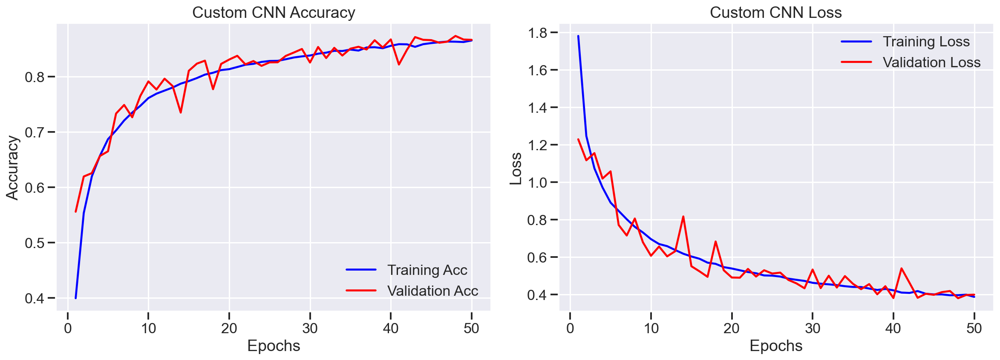
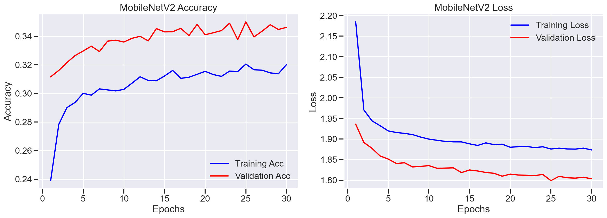

Created by Natasha Silvestre
Building and comparing deep learning models for image classification using the CIFAR-10 dataset.
Sample images from the dataset (32x32 pixels)
The dataset is perfectly balanced with 5,000 images per class!
Simple yet effective!
Custom CNN
MobileNetV2 (TL)
Note the difference in convergence and loss stability.
Transfer Learning (MobileNetV2) underperformed compared to Custom CNN.
Custom CNN outperforms across ALL metrics!
Natasha Silvestre